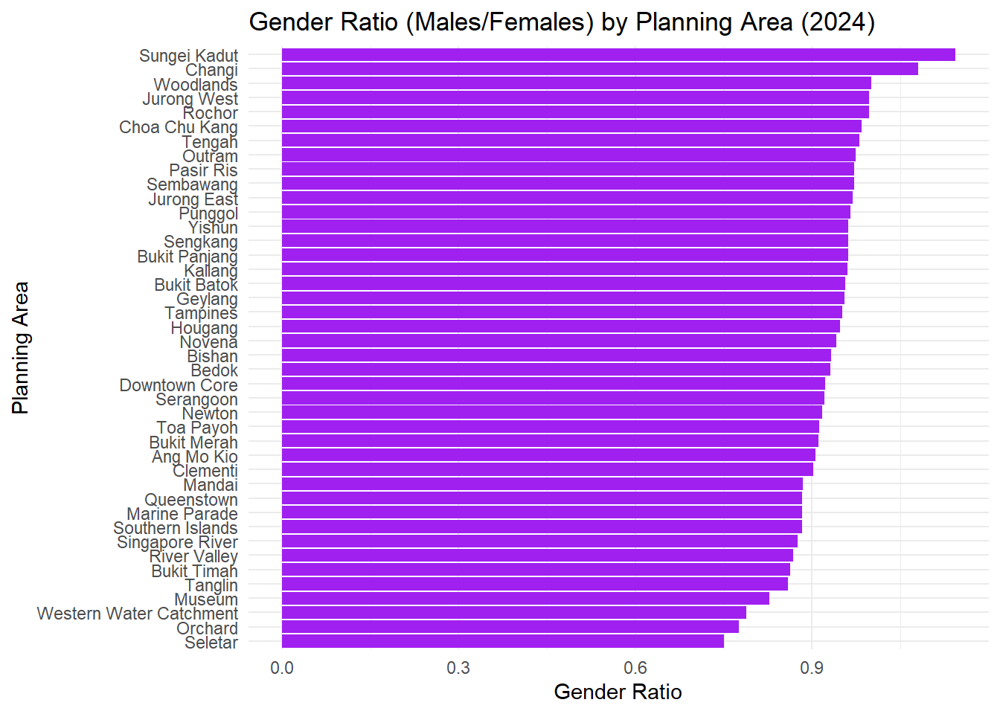

── Attaching core tidyverse packages ──────────────────────── tidyverse 2.0.0 ──
✔ dplyr 1.1.4 ✔ readr 2.1.5
✔ forcats 1.0.0 ✔ stringr 1.5.1
✔ ggplot2 3.5.2 ✔ tibble 3.2.1
✔ lubridate 1.9.4 ✔ tidyr 1.3.1
✔ purrr 1.0.4
── Conflicts ────────────────────────────────────────── tidyverse_conflicts() ──
✖ dplyr::filter() masks stats::filter()
✖ dplyr::lag() masks stats::lag()
ℹ Use the conflicted package (<http://conflicted.r-lib.org/>) to force all conflicts to become errors
data <-read_csv("data/respopagesex2024.csv")
Rows: 60424 Columns: 6
── Column specification ────────────────────────────────────────────────────────
Delimiter: ","
chr (4): PA, SZ, Age, Sex
dbl (2): Pop, Time
ℹ Use `spec()` to retrieve the full column specification for this data.
ℹ Specify the column types or set `show_col_types = FALSE` to quiet this message.
glimpse(data)
Rows: 60,424
Columns: 6
$ PA <chr> "Ang Mo Kio", "Ang Mo Kio", "Ang Mo Kio", "Ang Mo Kio", "Ang Mo K…
$ SZ <chr> "Ang Mo Kio Town Centre", "Ang Mo Kio Town Centre", "Ang Mo Kio T…
$ Age <chr> "0", "0", "1", "1", "2", "2", "3", "3", "4", "4", "5", "5", "6", …
$ Sex <chr> "Males", "Females", "Males", "Females", "Males", "Females", "Male…
$ Pop <dbl> 10, 10, 10, 10, 10, 10, 10, 10, 30, 10, 20, 10, 20, 30, 30, 10, 3…
$ Time <dbl> 2024, 2024, 2024, 2024, 2024, 2024, 2024, 2024, 2024, 2024, 2024,…
The table above shows the columns present in the dataset. It helps us understand what kind of data we are working with — such as planning area (PA), subzone (SZ), age, sex, and population count for the year 2024.
#Visualisation 1: Singapore Population Pyramid (2024)#
pyramid_data <- data %>%group_by(Age, Sex) %>%summarise(Pop =sum(Pop), .groups ="drop") %>%mutate(Pop =ifelse(Sex =="Males", -Pop, Pop))ggplot(pyramid_data, aes(x = Age, y = Pop, fill = Sex)) +geom_bar(stat ="identity") +coord_flip() +scale_y_continuous(labels = abs) +labs(title ="Singapore Population Pyramid (2024)",x ="Age", y ="Population",fill ="Sex") +theme_minimal()
The visualisation above presents a population pyramid of Singapore for the year 2024, based on the dataset from the Department of Statistics. The plot displays age groups along the vertical axis and the population count on the horizontal axis. Males are represented on the left using negative values, while females are displayed on the right. This mirrored layout is a standard design in demography to allow easy gender comparison.
The pyramid structure reveals age distribution patterns across genders. For instance, younger age groups generally show a balanced male-to-female ratio, while older age groups—especially those above 70—show a noticeable dominance of females, reflecting longer female life expectancy. Such patterns are essential for identifying demographic shifts, planning healthcare services, and allocating resources for ageing populations.
Using ggplot2 with coord_flip() and scale_y_continuous(labels = abs) ensures intuitive interpretation. Overall, this visualisation effectively communicates both the structure and gender balance within the Singapore population in 2024.
#Visualisation 2: Top 10 Planning Areas by Total Population#
top_pa <- data %>%group_by(PA) %>%summarise(Total_Pop =sum(Pop)) %>%arrange(desc(Total_Pop)) %>%slice_head(n =10)ggplot(top_pa, aes(x =reorder(PA, Total_Pop), y = Total_Pop)) +geom_col(fill ="steelblue") +coord_flip() +labs(title ="Top 10 Most Populous Planning Areas (2024)",x ="Planning Area", y ="Total Population") +theme_minimal()
The visualisation above presents the top 10 most populous planning areas in Singapore for the year 2024. Using a horizontal bar chart, the plot ranks planning areas based on their total resident population, which is aggregated by summing the population across all subzones, age groups, and sexes. This view helps identify which parts of the country are most densely populated, providing insights into urban concentration and possible resource planning needs. By flipping the coordinates, the chart improves readability, especially for long area names. “Steelblue” bars are used for visual clarity and consistency. From a data storytelling perspective, this plot supports city planning decisions, housing development, and transport infrastructure targeting by spotlighting the areas with the highest population density. Such a visual is especially useful for media articles aimed at conveying geographic population trends in an accessible manner to the general public. It combines clarity, precision, and relevance—hallmarks of effective visual communication.
#Visualisation 3: Gender Ratio by Planning Area#
gender_ratio <- data %>%group_by(PA, Sex) %>%summarise(Pop =sum(Pop), .groups ="drop") %>%pivot_wider(names_from = Sex, values_from = Pop) %>%filter(!is.na(Males) &!is.na(Females) & Females >0) %>%mutate(Gender_Ratio = Males / Females)ggplot(gender_ratio, aes(x =reorder(PA, Gender_Ratio), y = Gender_Ratio)) +geom_col(fill ="purple") +coord_flip() +labs(title ="Gender Ratio (Males/Females) by Planning Area (2024)",x ="Planning Area", y ="Gender Ratio") +theme_minimal()

This visualisation illustrates the gender ratio (males divided by females) across various planning areas in Singapore for the year 2024. A gender ratio of 1 indicates equal numbers of males and females, while a value below 1 suggests a higher female population. The horizontal bar chart makes it easy to compare the relative gender balance across regions. We observe that most planning areas have a gender ratio below 1, implying that females outnumber males in many parts of Singapore. A few regions, however, have ratios approaching or above 1, indicating a more balanced or male-dominant population. This insight can be useful for policy-making, healthcare planning, and social programs that require demographic balancing. The chart uses a simple color scheme and horizontal layout to handle long planning area names and allow better readability. It is also helpful in spotting outliers or regions with a skewed gender ratio quickly.
Phase 2: Peer Review and Makeover
Selected Peer Visualisation
Peer’s Chart: Population Pyramids
The visualisation reviewed here is a set of population pyramids comparing age and gender distribution across four selected planning areas in Singapore (2024): Bedok, Bukit Timah, Outram, and Tampines. These represent different housing, income, and historical profiles. The chart successfully explores structural demographic differences using mirrored horizontal bar plots.
✅ Good Design Elements
1.Strong Visual Narrative – Selecting diverse planning areas gives meaningful urban comparison.
2.Effective Faceting – Using facets keeps comparisons clean and consistent.
3.Clear Titles and Labels – Titles, subtitles, and legends are well structured.
❌ Areas for Improvement
1.Age Labels Overlap or Missing – Hard to read axis labels on the Y-axis.
2.Color Convention – Orange for females and blue for males is okay, but reverse would align with common visual standards.
3.Axis Scaling – Population scales differ across panels, making comparison harder.
Makeover Version
makeover_data <- data %>%filter(PA %in%c("Bedok", "Tampines", "Bukit Timah", "Outram")) %>%group_by(PA, Age, Sex) %>%summarise(Pop =sum(Pop), .groups ="drop") %>%mutate(Pop =ifelse(Sex =="Males", -Pop, Pop))ggplot(makeover_data, aes(x = Age, y = Pop, fill = Sex)) +geom_bar(stat ="identity", width =0.8) +facet_wrap(~PA, ncol =2) +coord_flip() +scale_y_continuous(labels = abs) +scale_fill_manual(values =c("Males"="#3399FF", "Females"="#FF6699")) +labs(title ="Improved Population Pyramids of Selected Planning Areas (2024)",subtitle ="Standardised layout, corrected axis and color conventions",x ="Age Group", y ="Population", fill ="Sex") +theme_minimal(base_size =10) +theme(strip.text =element_text(face ="bold"))
Explanation of Improvements In this makeover, the missing or overlapping labels were corrected by ensuring clean filtering. Axes are now fixed to allow better population comparisons across areas. Colors were adjusted to align with common conventions (blue for males, pink for females). These changes enhance readability while preserving the original intent.